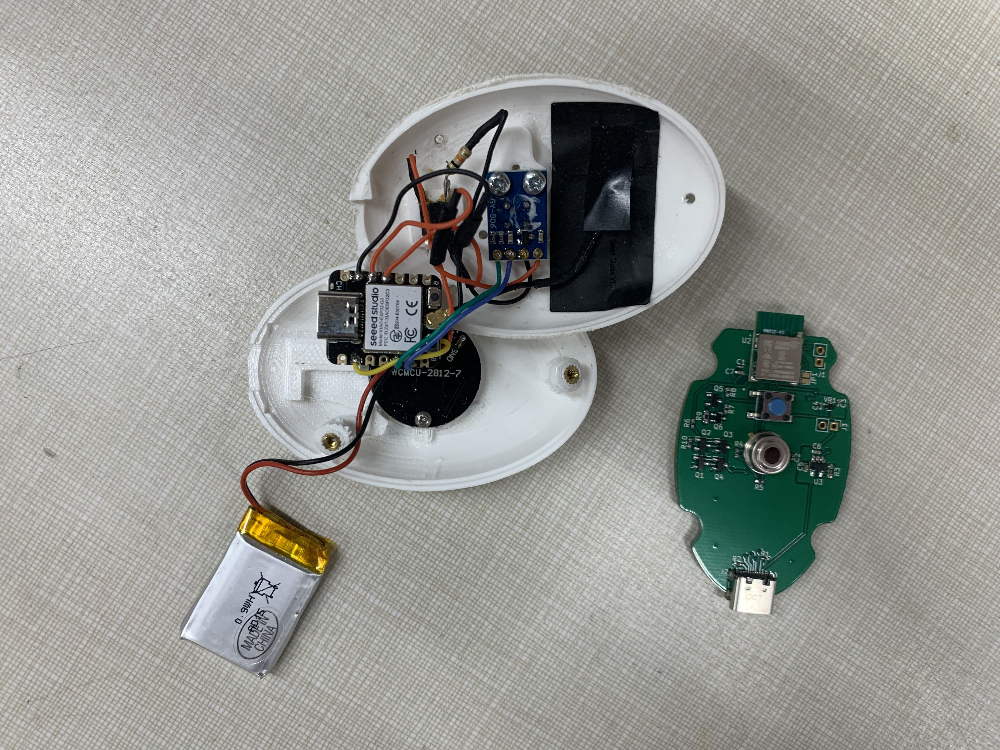
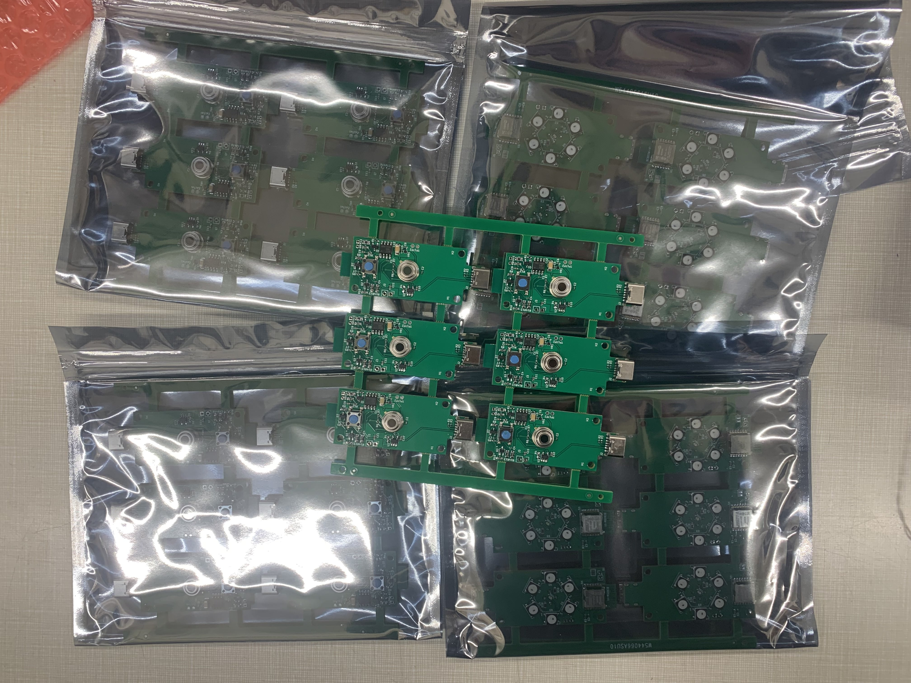
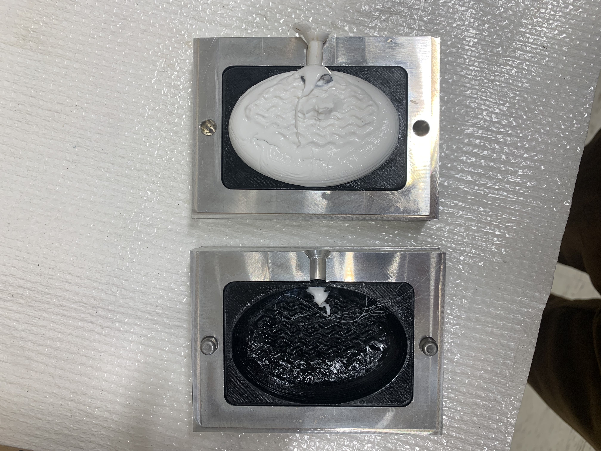
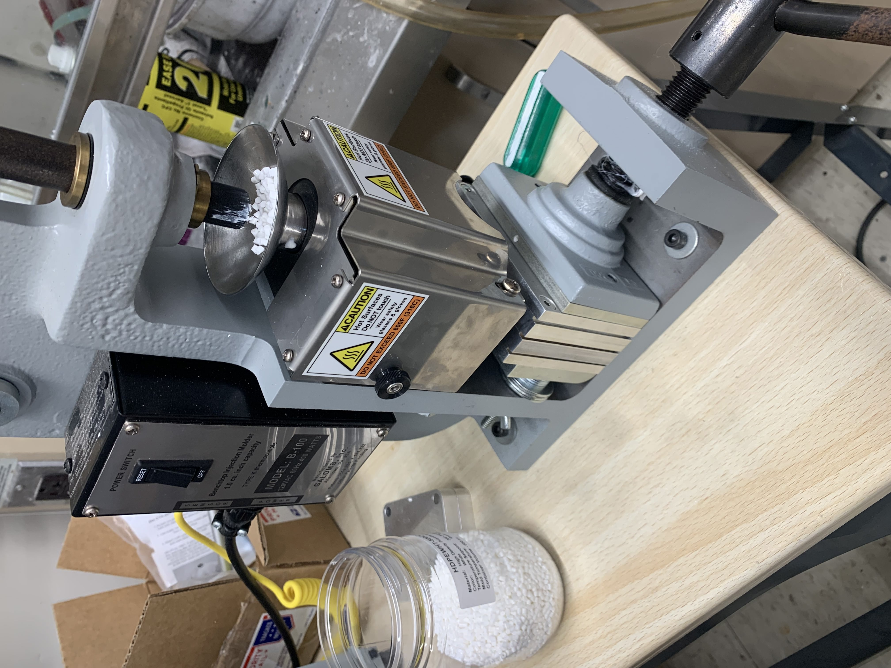
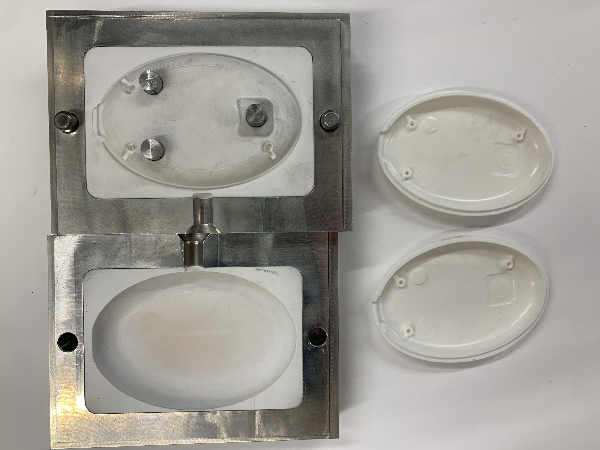
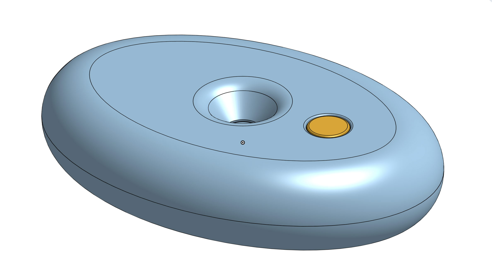
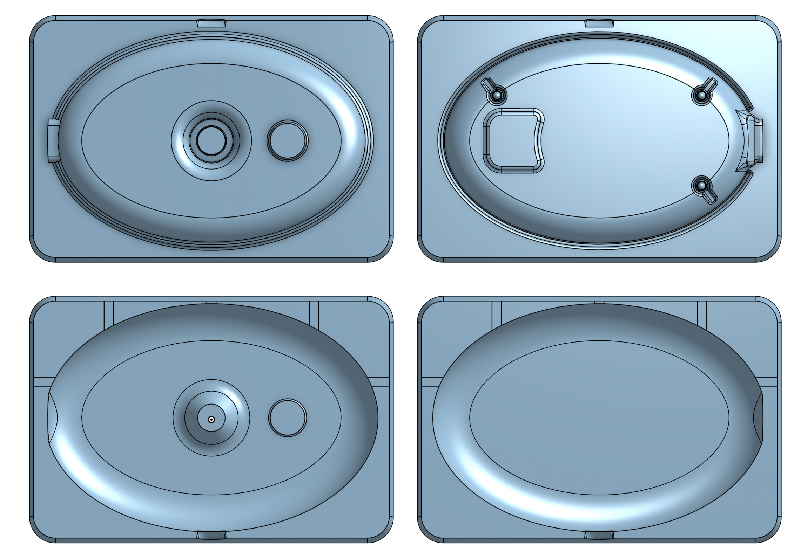
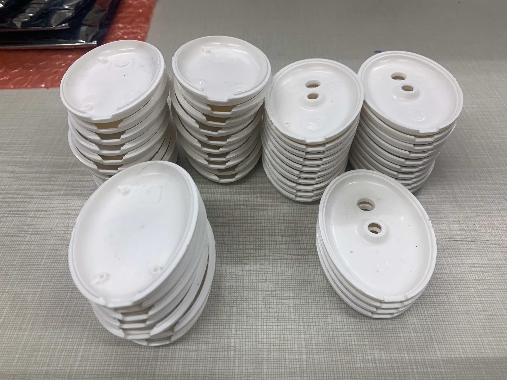

Calmstone
The Calmstone is the name of the latest revision of a biofeedback device that the Hansma Research Lab has been working on. When I joined the lab, they were using a very "uncomfortable" and "unwieldy" device to get data from human subjects for their research which required the subjects to come into the lab every single time.
My first task was to design a more ergonomic and easy-to-use electronic packaging for their device. I initially made multiple prototypes of just the outside shell so we could decide on the best size and shape to be comfortably held. After we decided on the outside shape I incorporated mounting for the new electronics and ensured they would all fit, and that assembly was as easy as possible. The picture on the left shows my case design and how all the electronics are mounted on the inside.
10 such devices were made and used to investigate a link between thermal biofeedback and reducing chronic pain. However, we encountered two big issues where the devices were discharging very quickly and subjects couldn't charge the device if it was off. Fortunately, these issues didn't prevent the collection of data but they made the device very inconvenient to use. The solution for this was a custom PCB which I took on the task of designing. I picked out a Bluetooth module that fit our needs and learned how to use KiCad to design a PCB. Learning how to design a PCB and specifying components was really fun and interesting since I had no idea how to do it and was left to just figure it out. It took me 3 versions to get everything working, and it was very gratifying to see my progress with each revision considering I knew nothing about how to flash microcontrollers on PCBs or how to design circuits. You can see my first revision at the bottom of the picture on the left, and the 30 we ordered of the third revision in the right picture.
With using a new Bluetooth module came the hurdle of having to rewrite all the software. The previous software was all written in Arduino and there wasn't a way to get the nrF52 board to use the same code. This led me to learn about the Zephyr RTOS and programming in C to rewrite the entire software to work on these new boards. I learned a lot about Bluetooth protocol, communication drivers, and Zephyr. After a lot of scavenging through examples, I was able to recreate all the functionality and more of the previous software.
With these 30 new boards arriving in approximately a month, it would be feasible to print 30 new cases, however, there was a lot of interest from other researchers who wanted to use this device in their studies. This led me to suggest that we try a small batch injection molding run. After doing a lot of research and presenting my findings we decided it would be feasible and that we would try it.
I had seen a manual injection molding machine in one of my labs during class and arranged for the lab to borrow it. Machining a mold out of aluminum would be expensive and it would not arrive in time so going off a whitepaper I read from Formlabs I planned on printing the mold using a Formlabs Form 3 printer in Rigid 10K, and then placing it in an aluminum frame to give it strength. After learning all about draft angles, shrink rate, and all other applicable information about manufacturing using injection molding, I designed a mold for PP.
Before printing the mold out of Rigid 10K I was curious how poorly a PLA mold would perform. Surprisingly, a lot better than I expected, see the image on the left. After one shot the mold was destroyed but the part turned out pretty well considering the mold was melting as the part was being formed.
The mold printed in Rigid 10K worked well and we were able to get usable cases, see the picture on the left. Sadly one of the screw posts on the mold broke off after a couple of shots, but it didn't alter the functionality of the cases so I continued to make cases. You can see my setup on the right with the injection molding machine, and my printed mold in the aluminum frame on the left with some of the injection molded cases.
The cases seemed to work pretty well and we were able to assemble them with a faux 3D printed PCB so I began to manufacture 30 cases for the 30 printed PCBs that were coming for the next study, see bottom right photo. The machine being manual made it a much more artistic endeavor than an engineering one, as I had to apply the same amount of force on the handle for the same amount of time for each shot. If I messed up and didn't keep these two constant the case would have caving and/or flashing, or other deformations.
  Making this device was a very engaging and rewarding experience and I am very happy I got to learn so much. The grad student working on this device made a startup out of it and now I am working through all the engineering challenges of bringing this device to market.